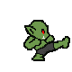
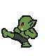
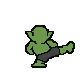
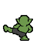

The upper pair keeps the chosen side-kick pose with shorter legs. The lower pair shows its back. Each opposite-facing pose is an exact pixel mirror. These are impact-pose drafts, not a complete animation.




The back drawings show a sideways kick seen from behind; they are not a kick traveling north away from the camera. Mirroring changes left/right, while the new drawing supplies the back anatomy.